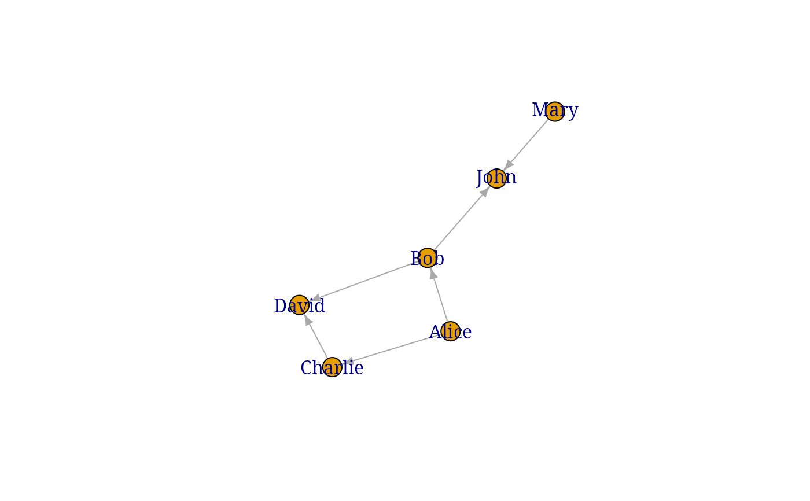
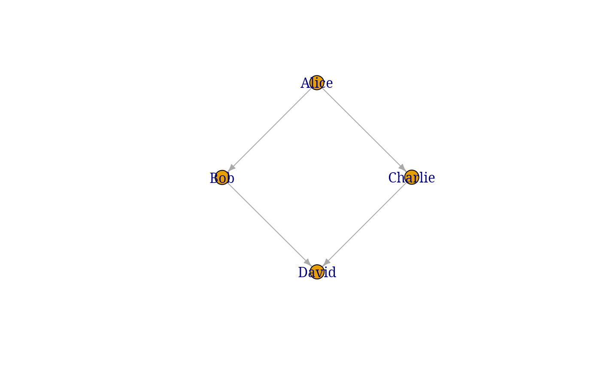
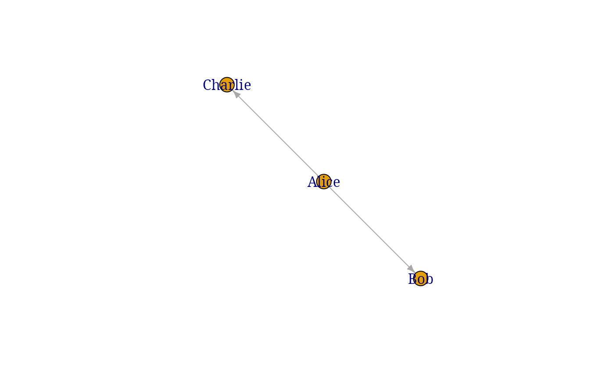
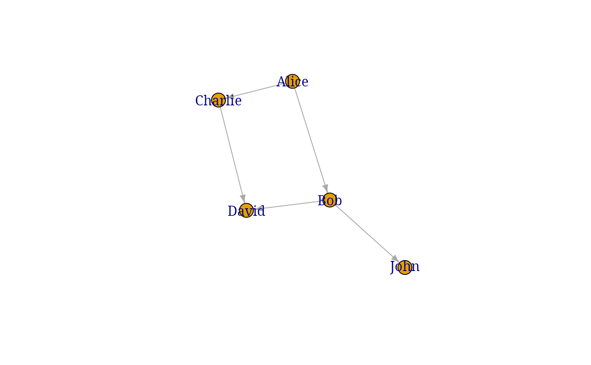

creates a sub graph with the node of reference and its Nth neighbors
Examples
g
#> IGRAPH 1195f6a DN-- 6 6 --
#> + attr: name (v/c)
#> + edges from 1195f6a (vertex names):
#> [1] Alice ->Bob Alice ->Charlie Bob ->David Charlie->David
#> [5] Bob ->John Mary ->John
g |> plot()

get_neighbors(g, "Charlie", 1)
#>
#> Attaching package: ‘tidygraph’
#> The following object is masked from ‘package:stats’:
#>
#> filter
#> # A tbl_graph: 3 nodes and 2 edges
#> #
#> # A rooted tree
#> #
#> # Node Data: 3 × 2 (active)
#> name .tidygraph_node_index
#> <chr> <int>
#> 1 Alice 1
#> 2 Charlie 3
#> 3 David 4
#> #
#> # Edge Data: 2 × 3
#> from to .tidygraph_edge_index
#> <int> <int> <int>
#> 1 1 2 2
#> 2 2 3 4
get_neighbors(g, "Charlie", 2) |> plot()

get_neighbors(g, "Alice", 1) |> plot()

get_neighbors(g, "Alice", 2) |> plot()
